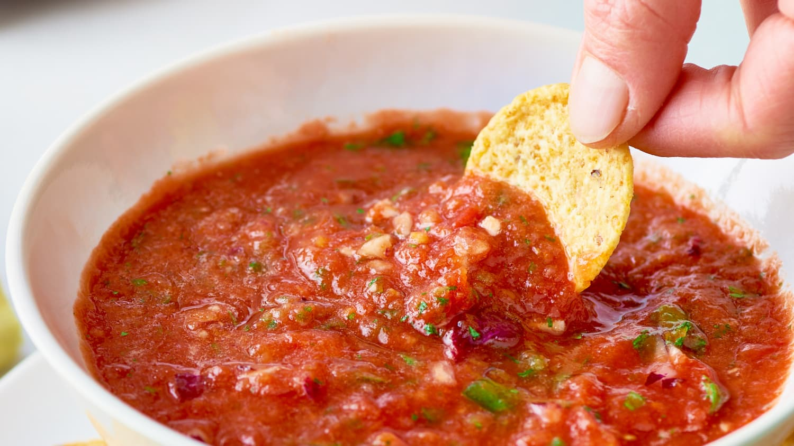

Salsa Recipe

Description
A super easy, super fresh, super delicious salsa. You'll never need another salsa recipe again! This has been my go-to recipe for years, it's definitely a family favorite. We make it almost every week. It's a staple recipe.
Ingredients
- 1 1/4 lbs ripe Roma tomatoes* (about 5 - 6)
- 1 (14.5 oz) can petite diced tomatoes**
- 2 green onions,*** ends trimmed, chopped into thirds
- 1/3 cup chopped red onion (about 1/4 of a medium)
- 1 jalapeno pepper,**** seeded and roughly chopped
- 1/3 cup fresh cilantro (about a handful)
- 1 large clove garlic, roughly chopped
- 2 Tbsp fresh lime juice
- 1/2 tsp chili powder
- 1/4 tsp ground cumin
- 1/2 tsp granulated sugar (optional)
Salt and pepper to taste
Instructions
- Combine all ingredients in a food processor and pulse in 1 second bursts until all ingredients are finely chopped.
- Serve with tortilla chips. Note that salsa always tastes best after it's been refrigerated for a few hours, so if time allows let the flavors marinate together before serving.
- Store in refrigerator up to 1 week.
Back to Home
Back to Top